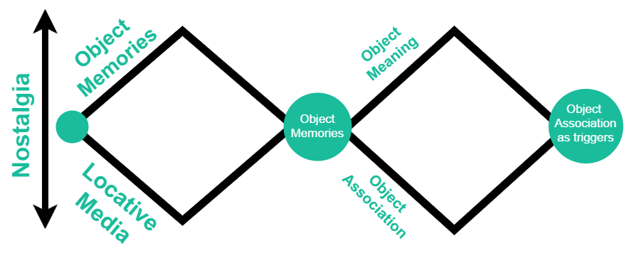

Fireflies Concept Video

Brief Summary
This project is an enquiry into how to deal with Nostalgia in a non-intrusive way. The project aims to utilise the IoT platform to trigger nostalgia and convey it to the other person in a non intrusive manner so that the whole process appears very seamless and intuitive.We have some objects of significance to which we associate some object memories, the artefact Fireflies aims to utilise those object memories and evoke those memories.The artefact comes in a pair, that uses home Wifi to convey that someone somewhere is remembering you, it uses the Light as medium in the form of tiny fireflies each holding a memory of distant past.
Design Process Flow:
A approach of Double Diamond method was employed to comeup with significant ideas for this project.After a multi modal analysis of memory, nostalgic memories were chosen a entry point.
Nostalgia was further analysed as a locative noastalgia and that asociated with people and objects.Obects have Obejct history: which is how when and where the object was attained and used, at the same time obejects also have Object Association: How do we associate ourselves with an object, maybe a guitaar that was used to perform in your first orchestra.
After a thorough analysis it was understood that one does not need a recording and retrival device for triggering the nostalgia, rather very subtle cues can be given that in a very non-intrusive way trigger the association and thus strike a converstaion.